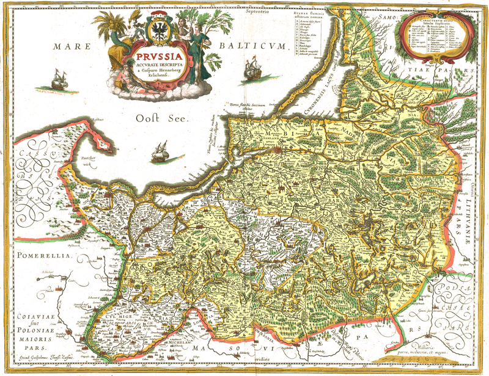
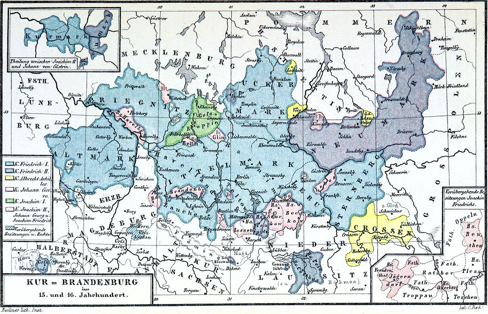
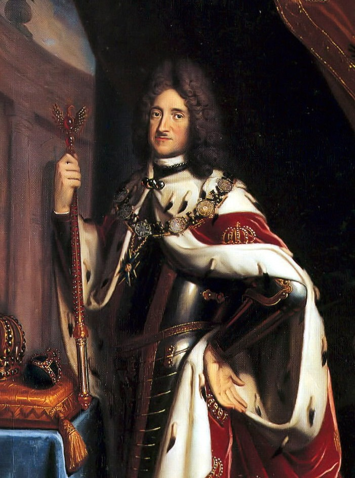
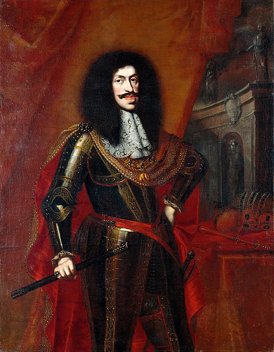
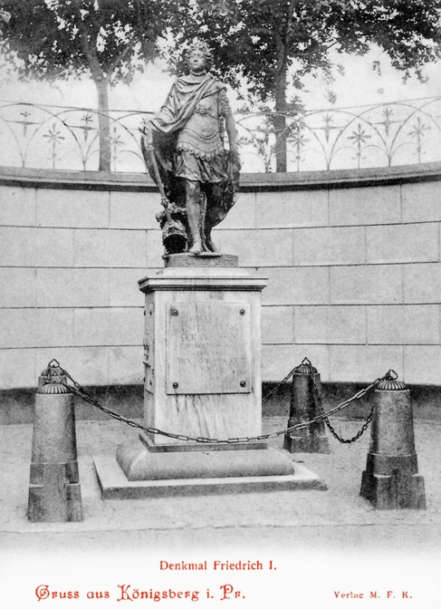

Наследие тевтонских рыцарей и Великого курфюрста. Рождение Прусского королевства
Тевтонский орден
По выражению великого Вольтера, Пруссия – это «армия, у которой есть государство».
Действительно, милитаристские традиции здесь укоренились еще во времена покорения тевтонскими рыцарями земель пруссов. Новая нация рождалась в условиях бесконечных войн, что
прямо отразилось на ее менталитете. Немецкие колонисты, прибывавшие в Пруссию со всех
уголков империи, раздираемой внутренними войнами, не могли здесь выжить без забвения
личных интересов ради общего блага, без отваги и склонности к авантюризму. Вера пруссаков
была глубокой, фундаментальной и, в то же время, воинственной – в этом можно убедиться,
посмотрев на возводимые рыцарями замки и соборы.
Щит с черным крестом - герб Тевтонского ордена
Предшественником Прусского королевства был Тевтонский орден, учрежденный еще во
времена крестовых походов на Ближний Восток. Орден формально подчинялся как папе Римскому, так и императору, его ряды пополняли исключительно немцы. Изначально венгерский
король предоставил рыцарям земли в Трансильвании, где те построили ряд замков. Однако из-за неприязни венгерских дворян крестоносцам пришлось уйти в Восточную Пруссию, где те с
благословения Рима начали постепенное завоевание прусских язычников.
Альбрехт Гогенцоллерн - последний великий магистр Тевтонского ордена и первый герцог Пруссии с 1525 г.
Поражение при Грюнвальде едва не погубило Тевтонский орден, но рыцари выстояли,
хоть никогда больше и не смогли вернуть былую мощь. В 1525 году Альбрехт Гогенцоллерн,
магистр Тевтонского ордена сделал пусть и банальный, но правильный вывод – времена Средневековья давно прошли и орден теперь не занимается, как в прежние места, христианским
миссионерством. Монахи, на словах клявшиеся отречься от мирской жизни, на деле и не
думали с ней расставаться.
Учение Мартина Лютера ставило, мягко скажем, под сомнение авторитет светской власти римских пап: немецкий монах считал, что церковь должна заниматься своими непосредственными обязанностями и не лезть в политику – удел государей. Такие идеи были близки как
всем скандинавским монархам и английскому королю Генри VIII, так и самому Альбрехту. Тем
более, что влияние католической церкви в Северной Европе на фоне усиления власти светских
правителей и так слабело год от года.

Карта Прусского герцогства в 1525-1701 гг.
В том же 1525-м Альбрехт упразднил орденское государство, конфисковал имущество
церкви, принял лютеранство и принес вассальную присягу польскому королю. Так новорожденное Прусское герцогство, располагавшееся на периферии европейского континента, было
спасено от кровавых религиозных войн и получило шанс на мирное государственное строительство. Принятое герцогом решение изменило историю не только Пруссии, но и всей Германии, а возможно и всей Европы.
Альбрехт взялся за свое дело с энтузиазмом. Он покровительствовал культуре, учредил Кенигсбергский университет Альбертину, где, между прочим, учился сам Иммануил Кант,
открывал школы и гимназии. Преемники первого герцога Пруссии не смогли достойно продолжить его начинания, а в 1618 году прямая ветвь прусских Гогенцоллернов пресеклась. Если
бы Пруссия тогда вошла в состав Польши, история всей Германии пошла бы совершенно другим путем.
Маркграфство Бранденбург
В этот судьбоносный момент власть над Пруссией перешла в руки маркграфов Бранденбурга, происходивших из той же династии Гогенцоллернов. Бранденбургом они правили с 15
века, когда бургграф Нюрнберга Фридрих получил власть над маркграфством из рук императора Сигизмунда. Последний рассчитывал на помощь Фридриха в крестовых походах против
мятежных чешских гуситов. С этого времени Гогенцоллерны стали традиционными союзниками империи, благодаря чему постепенно укрепляли свой авторитет в Северной Германии.

Карта курфюршества Бранденбург в 1157-1618 гг.
Династия Асканиев сыграла ключевую роль в превращении маркграфства Бранденбург
в сильное централизованное государство. Местные епископы подчинялись не императору, а
маркграфу, в то время как в остальных германских землях князья-епископы имели широкую автономию и правили лучшими землями. Тому есть объяснение: Бранденбург был создан
рыцарями-колонистами, сражавшимися со славянскими племенами. Подобно Тевтонскому
ордену, чьи владения лежали рядом на востоке, Бранденбург изначально являлся военным
государством.
Заслуга в завоевании одерских земель целиком и полностью принадлежала маркграфам,
потому они чувствовали себя полноправными властителями своей страны. Опорой власти
бранденбургских маркграфов было многочисленное мелкое дворянство – потомки колонистов.
Его представители, наряду с потомками тевтонских рыцарей, позднее составят основу прусского офицерского корпуса и будут передавать военные традиции, традиции верности правящему дому Гогенцоллернов, из поколения в поколение.
Бранденбург-Пруссия
Главным строителем Бранденбург-Пруссии, как известно, стал Фридрих Великий Курфюрст. Страна тяжело перенесла последствия Тридцатилетней войны и едва не оказалась на
грани вымирания. Фридрих мобилизовал все оставшиеся людские силы на восстановление
Бранденбург-Пруссии; потом и кровью заработанные деньги он вкладывал в строительство
инфраструктуры и развитие армии. Более того, наряду с Вильгельмом II курфюрст был единственным Гогенцоллерном, реально верившим в возможность создания колоний и инвестировавшим в строительство военно-морского и торгового флотов.
Портрет Фридриха Великого Курфюрста - главного строителя Бранденбург-Пруссии
Помимо упорядочения сбора налогов, Фридрих учредил в апреле 1655 года Генеральный военный комиссариат, который взял на себя управление делами армии. Постепенно он
приобрел ключевую роль в администрации Бранденбург-Пруссии и начал также контролировать мануфактурную промышленность. Подобно Жан-Батисту Кольберу, Великий Курфюрст
создал такую систему, в которой органы военного и экономического управления тесно взаимодействовали друг с другом. [1]
Именно Фридрих Великий Курфюрст положил начало ставшей для Гогенцоллернов традиционной политики веротерпимости. Как и Нидерланды, Бранденбург-Пруссия принимала у
себя протестантов со всей Европы, в особенности из Франции. Приток ценных кадров и специалистов еще сильнее ускорял развитие экономики страны. А Велауское соглашение 1657 года
окончательно избавило Прусское герцогство от вассальной зависимости от Польши и сделало
его личным владением Гогенцоллернов.
Солдаты армии Бранденбург-Пруссии, рисунок Максимилиана Шефера
В войнах со Швецией и Польшей бранденбургская армия приобретала боевой опыт, осваивала новейшие тактические приемы и постепенно превращалась в грозную силу по европейским меркам. К началу 18 века Бранденбург-Пруссия превратилась в одно из самых милитаризованных государств Европы. Выражалось это не только в наличии довольно крупной
относительно численности населения страны армии – при назначении на высшие административные должности предпочтение отдавалось военным, а не гражданским служащим. Дворяне
считали службу в армии не только способом обогатиться, но и возможностью преумножить
славу своего рода и снискать личную славу. Все это в совокупности приводило к постепенному
формированию в прусском обществе военной культуры.
Как Пруссия стала королевством
Фридрих Великий Курфюрст приложил титанические усилия для возрождения Бранденбург-Пруссии. По его собственному признанию, на первых порах он работал больше своего
секретаря. Своему наследнику Фридриху Великий Курфюрст оставил динамично развивающееся государство с эффективной экономикой и системой управления. Несмотря на это, Бранденбург-Пруссия все еще оставалась в политическом отношении крайне раздробленной страной, а ее жители довольно слабо сознавали свою связь с правящей династией.

Портрет Фридриха I - первого короля Пруссии
Новому правителю практически сразу же пришлось бороться за власть со своими многочисленными родственниками. Утвердившись на троне, Фридрих, видя рост мощи Бранденбург-Пруссии, пожелал превратить свою страну в королевство. Гогенцоллерны традиционно
были союзниками Габсбургов и, когда те начали готовиться к войне за испанское наследство,
курфюрст Фридрих предложил императору Леопольду I военную помощь. Взамен он много
не потребовал – всего лишь королевскую корону…
С одной стороны, ход Фридриха был чересчур рискованным. С давних времен в Священной Римской империи был только один король – король Германии. Был еще, правда, титул
короля римлян, но данный титул носили, как правило, наследники престола, потому он носил
сугубо символический характер. В Вене и без того внимательно следили за развитием событий
в Бранденбург-Пруссии и с подозрением относились к усилению Гогенцоллернов.

Бенджамин ван Блок. Портрет императора Леопольда I
С другой стороны, на кону стояла судьба не только самой Испании, но и ее латиноамериканских колоний. Леопольд до того железным кулаком удерживал единство империи, борясь
почти что одновременно с османами в Венгрии и французами в Западной Германии. Грядущая же война прямо повлияла бы на всю дальнейшую мировую политику – если бы Габсбурги
сумели сохранить ускользавший из их рук испанский трон и колонии в Новом Свете, они
смогли бы восстановить свое могущество в Европе, а Леопольд получил бы возможность оттянуть время распада Священной Римской империи.
Ставки были чересчур высоки, потому кайзер согласился с требованиями Фридриха.
Договорились, правда, о том, что последний будет носить титул «король в Пруссии», поскольку
если с 1657 года Прусское герцогство было непосредственным владением Гогенцоллернов, то
вот курфюршество Бранденбург все еще входило в состав империи и Германского королевства,
правителем коих был сам Леопольд. В любом случае, манипуляции с титулом не отменяли
главного – усиления политических позиций Гогенцоллернов.
Антон фон Вернер. Коронация Фридриха III королем Пруссии в Кенигсберге 18 января 1701 года
18 января 1701 года в Кенигсберге Фридрих короновал себя и свою супругу Софию
Шарлотту королевскими коронами, чем официально начал новую эпоху единого Прусского
королевства. Столь пышная коронация обошлась Пруссии немного-немало в 6 млн талеров
– сумму, бывшую для 18 века просто астрономической. Сбор королевского налога принес в
казну лишь 500 тыс. талеров, чего не хватило даже на украшение королевских корон. При всем
при этом годовой доход страны, как пишет германский историк К. Кларк, составлял лишь 3
млн талеров.
Однако Фридрих руководствовался при разработке ритуала коронации не только соображениями эстетики. Сама форма королевской короны должна была символизировать наличие
у короля не только светской, но и церковной власти и то, что он отвечает за свои действия
исключительно перед Богом. Степень стремления Фридриха к абсолютной власти демонстрирует тот факт, что до декабря 1700 года прусские сословия даже не были в курсе о предстоящей коронации.[2]
История отвела ему всего лишь 12 лет правления в качестве короля, но за это время
Фридрих успел изрядно растратить казну на содержание большого двора, где господствовала
французская мода и культура. В то же самое время король учредил Академии художеств и наук,
а также построил Королевский дворец в Берлине и, специально для жены, дворец в Шарлоттенбурге. Делалось это все с одной целью – Фридрих желал продемонстрировать притязания
Пруссии на статус главного культурного и политического конкурента Австрии.

Памятник королю Пруссии Фридриху I возле замка Кенигсберг, утрачен после Второй мировой войны
Участие в войнах с Францией и Швецией, а также роскошная жизнь королевского двора
больно били по прусской казне. Вся тяжесть полевых работ и налоговая нагрузка ложилась
на низшие сословия, особенно крестьянство. В данном смысле Пруссия никак не отличалась
от тех же Франции и России, но, в отличие от них обоих, она сама и близко не располагала
схожими экономическими резервами. Для столь маленькой страны расточительное правление
Фридриха I могло обернуться губительными последствиями.
Первый король Пруссии скончался в 1713 году, оставив после себя безусловное противоречивое наследие. Ясно было одно: начатое им дело непременно требовалось продолжать, но
страна притом нуждалась в более грамотной экономической политике. К счастью для Пруссии,
любителю роскоши и пышных церемоний Фридриху наследовал его сын Фридрих Вильгельм –
человек с абсолютно иной ментальностью. Скупой на траты и религиозный, он получит репутацию мужицкого, «солдатского» короля. Но несмотря на свой образ, который многим мог бы
показаться непривлекательным, Фридрих Вильгельм за свое 27-летнее правление фактически
создал фундамент нового Прусского государства и по праву вошел в историю как один из лучших германских правителей.

.jpg)